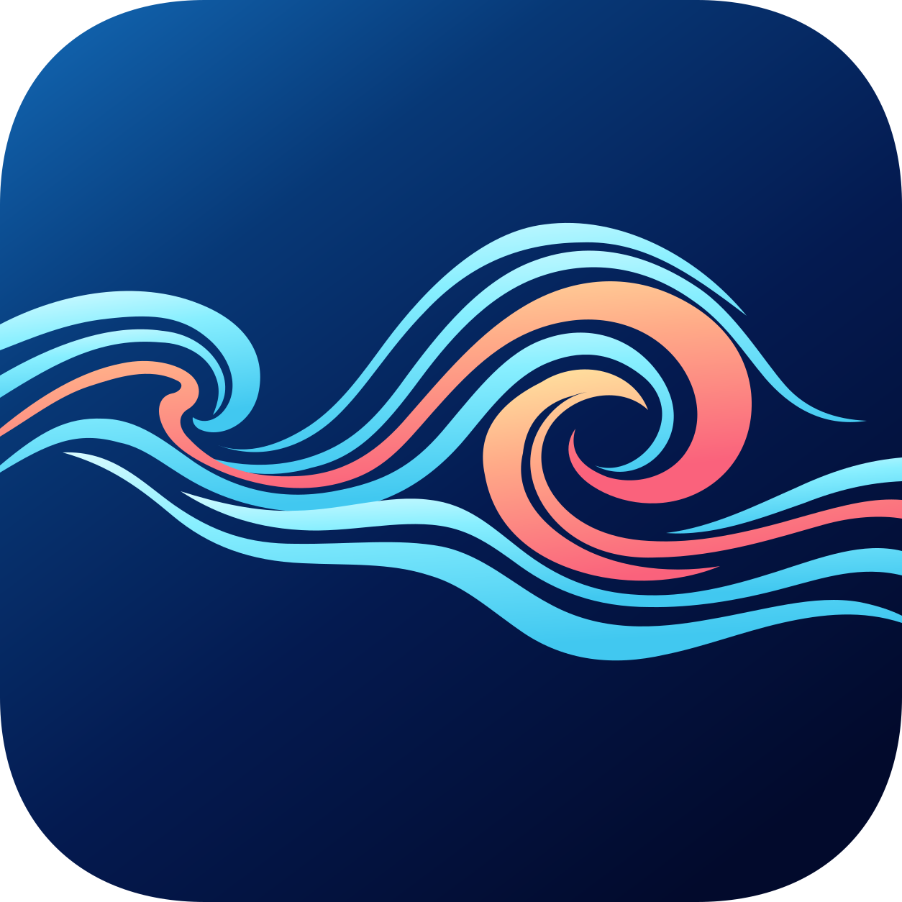
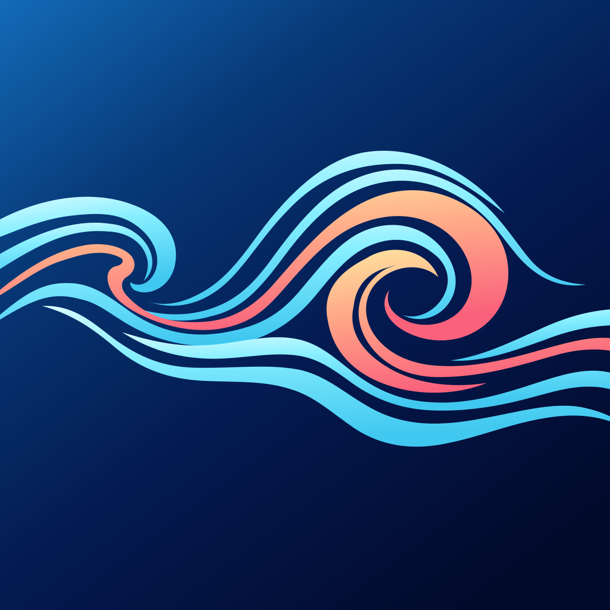
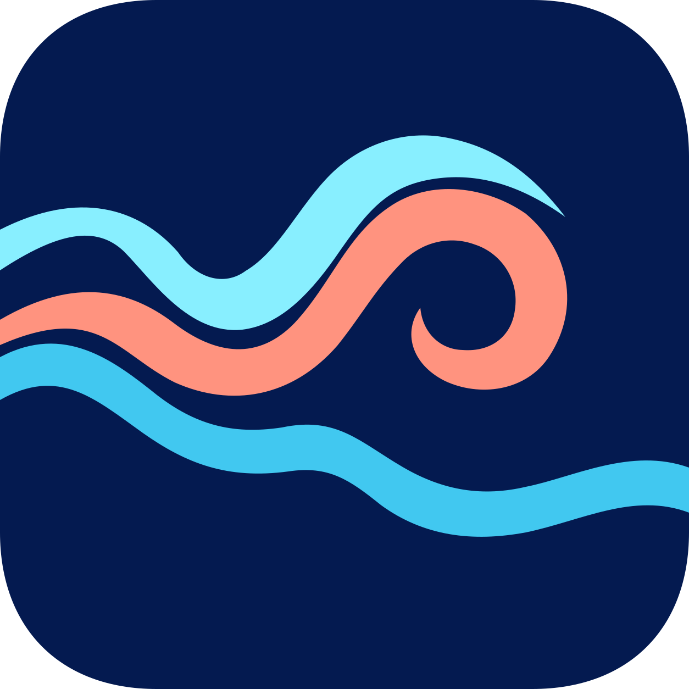
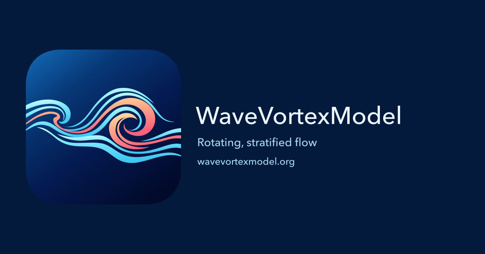
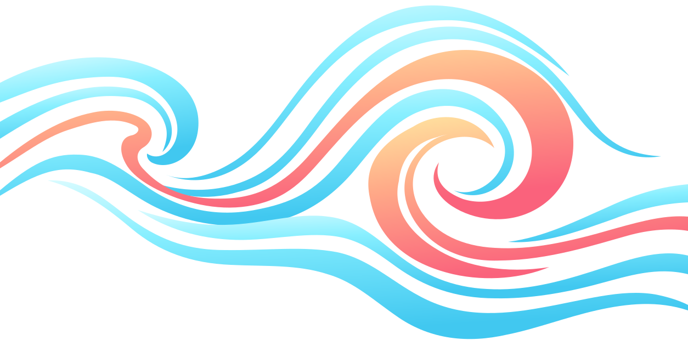

<!doctype html>
<html lang="en">
<meta charset="utf-8">
<meta name="viewport" content="width=device-width, initial-scale=1">
<title>WaveVortexModel branding preview</title>
<style>
  * { box-sizing: border-box; }
  body { margin: 0; padding: 40px 24px; color: #122e50; background: #eef3f8; font: 16px/1.5 "Avenir Next", Avenir, sans-serif; }
  main { max-width: 1040px; margin: auto; }
  h1 { margin: 0 0 28px; font-size: 28px; font-weight: 500; }
  h2 { margin: 0 0 20px; font-size: 18px; font-weight: 500; }
  figure { margin: 0; }
  figcaption { margin-top: 10px; font-size: 14px; }
  section { padding: 28px; border-radius: 16px; background: white; margin-bottom: 24px; }
  .icons, .wordmarks { display: grid; grid-template-columns: repeat(3, 1fr); gap: 24px; align-items: start; }
  .icons img { width: 100%; max-width: 240px; display: block; }
  .wordmarks { grid-template-columns: 1fr 1fr; }
  .wordmark { padding: 24px; border-radius: 12px; background: #f5f6fa; }
  .wordmark.dark { color: #edf6ff; background: #27262b; }
  .wordmark img { display: block; width: 214.4px; max-width: 100%; height: 40px; object-fit: contain; object-position: left; }
  .favicon-row { display: flex; gap: 32px; align-items: start; flex-wrap: wrap; }
  .favicon-row img { display: block; }
  .sharing { display: block; width: 100%; height: auto; }
  .flow { padding: 24px; border-radius: 12px; background: #041a3d; }
  .flow img { display: block; width: 100%; height: auto; }
  .flow.mono { margin-top: 20px; background: #eef3f8; }
  @media (max-width: 650px) {
    body { padding: 24px 12px; }
    section { padding: 20px; }
    .icons { grid-template-columns: 1fr; }
    .wordmarks { grid-template-columns: 1fr; }
  }
</style>
<main>
  <h1>WaveVortexModel branding</h1>
  <section>
    <h2>Full and small icons</h2>
    <div class="icons">
      <figure><figcaption>Rounded website icon</figcaption></figure>
      <figure><figcaption>Square shortcut icon</figcaption></figure>
      <figure><figcaption>Simplified small icon</figcaption></figure>
    </div>
  </section>
  <section>
    <h2>Header wordmarks at display size</h2>
    <div class="wordmarks">
      <figure class="wordmark"><figcaption>Light background</figcaption></figure>
      <figure class="wordmark dark"><figcaption>Dark background</figcaption></figure>
    </div>
  </section>
  <section>
    <h2>Favicons at native sizes</h2>
    <div class="favicon-row">
      <figure><figcaption>16 px</figcaption></figure>
      <figure><figcaption>32 px</figcaption></figure>
      <figure><figcaption>48 px</figcaption></figure>
      <figure><figcaption>96 px</figcaption></figure>
    </div>
  </section>
  <section>
    <h2>Link-sharing card</h2>
    
  </section>
  <section>
    <h2>Standalone flow marks</h2>
    <div class="flow"></div>
    <div class="flow mono"></div>
  </section>
</main>
</html>
